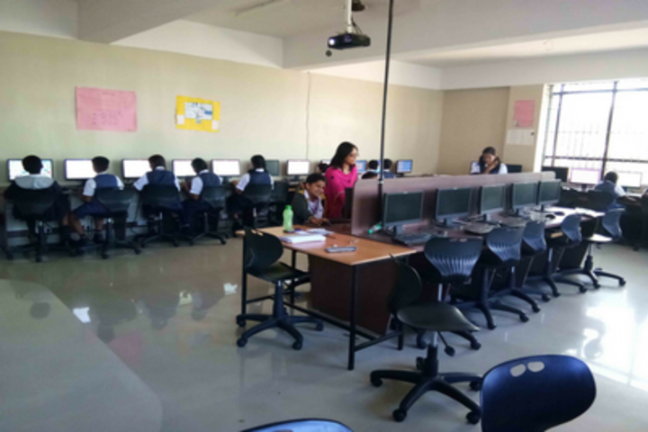

Computer lab
built at 2010
A computer lab is a space which provides computer services to a defined community. Computer labs are typically provided by libraries to the public, by academic institutions to students who attend the institution, or by other institutions to the public or to people affiliated with that institution. Users typically must follow a certain user policy to retain access to the computers. This generally consists of the user not engaging in illegal activities or attempting to circumvent any security or content-control software while using the computers.In public settings, computer lab users are often subject to time limits, in order to allow more people a chance to use the lab, whereas in other institutions, computer access typically requires valid personal login credentials, which may also allow the institution to track the user's activities. Computers in computer labs are typically equipped with internet access, while scanners and printers may augment the lab setup. Computers in computer labs are typically arranged either in rows, so that every workstation has a similar view of one end of the room to facilitate lecturing or presentations,or in clusters, to facilitate small group work.In some cases, generally in academic institutions, student laptops or laptop carts take the place of dedicated computer labs, although computer labs still have a place in applications requiring special software or hardware not practically implementable in personal computers.